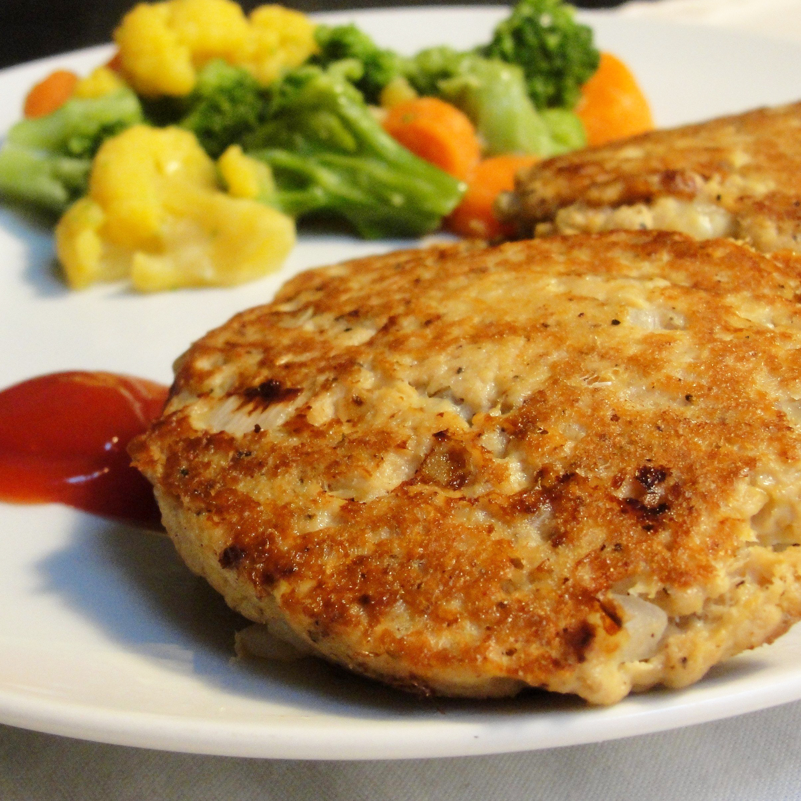

Salmon Cakes

Description
Wondering how to make salmon cakes? This is a recipe for my grandmother's famous salmon cakes.
It's a family recipe that has been passed down through generations.
Serve them with macaroni and cheese or any other type of side dish.
Ingredients
- 1 (14.75 ounce) can salmon, drained and flaked
- 2 large eggs, beaten
- 1 small onion, diced
- 1 teaspoon ground black pepper
- 3 tablespoons vegetable oil
Directions
Step 1
- Pick through salmon to remove any bones or large pieces of skin.
Step 2
- Beat eggs in a mixing bowl. Stir in salmon, onion, and black pepper.
- Mix thoroughly.
Step 3
- Shape salmon mixture into eight 2-ounce patties.
Step 4
- Heat oil in a large skillet over medium heat.
- Fry patties until crispy and golden brown on the outsides, about 5 minutes per side; work in batches if necessary to avoid crowding the pan..